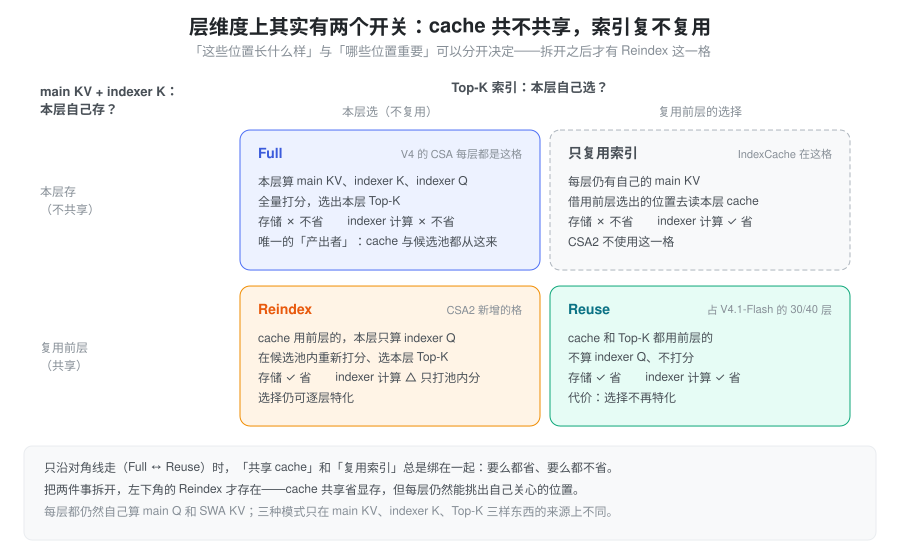
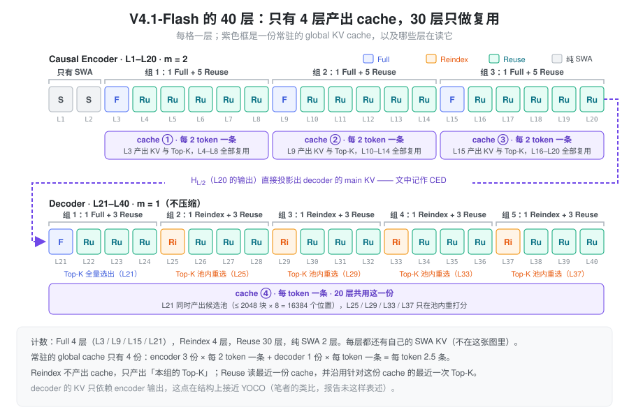
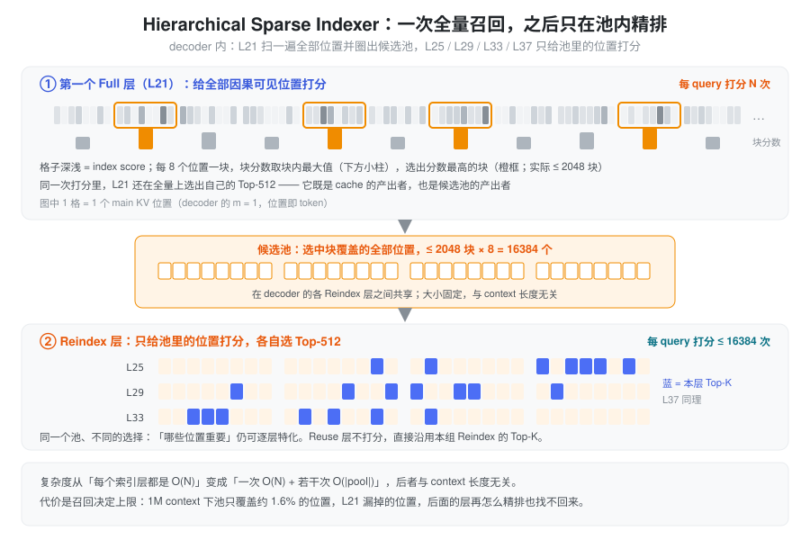

CSA2 = 会跨层复用的 CSA + 两级稀疏检索。
DeepSeek-V4.1 的全局 attention 分支。前置知识见 CSA HCA：V4 的 CSA 已经在序列方向把 KV 压成”每 m 个 token 一条”，CSA2 接着在层方向压——让大部分层不再持有自己的一份 cache，也不再自己跑 indexer。下文先讲为什么要往层维度压，再讲把”共享”拆成两个开关的核心设计，然后是三种模式、层次化 indexer 和 V4.1-Flash 的实际排布，最后讨论代价、训练侧支撑与 SGLang 的落点。
问题：前两个维度已经压过了，剩下的是层
长上下文的 KV 成本沿三个相乘的维度增长：
\text{cost} \;\propto\; \underbrace{(\text{entry size})}_{\text{每条 KV 多大}} \times \underbrace{\frac{N}{m}}_{\text{序列方向条目数}} \times \underbrace{\#\text{layers keeping their own}}_{\text{层方向份数}} \times \text{bits}
- entry size：一条 KV 有多宽——GQA / MLA 已经做过；
- sequence：隔多少个 token 记一条 KV——V4 的 CSA / HCA 已经做过；
- layer：有多少层各自持有一份——还没人系统地压过。
因为是乘法，第三维上每砍一半，总成本就砍一半，与前两维已经压到多狠无关。V4 里每个 CSA/HCA 层都有自己的一份压缩 KV 和 indexer K，indexer 也每层都跑一遍——层维度是剩下最大的空间。
前人工作在层维度上各有缺口：
| 工作 | 做法 | 缺口 |
|---|---|---|
| IndexCache | 跨层复用 Top-K 索引 | 省的是 indexer 计算，省不了 main KV 存储 |
| YOIO | 一次算完 sparse routing，全层共享 | 全网共享一份 routing，限制性能 |
| HySparse | sparse 层复用 dense 层 KV | 仍保留全量 attention 层 |
论文的概括是：index reuse alone saves no main KV storage, network-wide routing sharing limits performance, and hybrid designs still retain full attention layers——没有一种方法同时覆盖三个维度。
还有一个跨层复用本身带来的新问题：复用减少了 indexer 被执行的次数，但剩下那几次执行时，indexer 仍要给整段因果可见 context 打分。百万级 context 下，这几次全量打分会成为新瓶颈。CSA2 的两项设计分别回答这两个问题：解耦的跨层复用管”份数”，层次化 indexer 管”每次打分的范围”。
设计：把 cache 共享与索引复用拆开
“层与层之间共享”其实包含两件不同的事：
- cache 共享——main KV 与 indexer K 跨层共享。它回答”这些位置长什么样”，省的是显存与存储；
- 索引复用——Top-K 结果跨层复用。它回答”哪些位置重要”，省的是 indexer 计算。
关键的观察是：这两件事可以独立决定。如果把它们绑在一起，只有”全都自己来”和”全都用别人的”两种选择；拆开之后就是一个 2×2 的格子：

- Full（左上）：cache 和索引都自己产出，就是 V4 里每个 CSA 层的样子；
- Reuse（右下）：两样都用前层的，最便宜；
- 只复用索引（右上）：IndexCache 所在的格子，省算力不省显存——CSA2 不用它；
- Reindex（左下）：cache 共享，但本层重新选。这是拆开之后才出现的新格子，也是这套设计里最有意思的一格——“这些位置长什么样”被省掉了，“哪些位置重要”仍允许逐层特化。
CSA2 用的就是 Full / Reindex / Reuse 这三格，并且是静态分配到每一层的，不是学出来的路由。
相比 V4 的 CSA，改了什么
| 维度 | CSA（DeepSeek-V4） | CSA2（DeepSeek-V4.1） |
|---|---|---|
| 压缩窗口 | 一条压缩条目由 2m 个原始 entry 产生，相邻条目重叠 | 去掉 overlap，一条由 m 个 entry 产生 |
| 位置编码 | 压缩时用 absolute positional
embedding（ape）标注这 2m 个位置 |
去掉 |
| indexer K 的来源 | 从 hidden state 走独立的压缩路径 | 由 main KV 投影得到 |
| 全局分支结构 | CSA + HCA 混合 | 纯 CSA2（HCA 取消），m=1 作为不压缩特例 |
| 与其它层的关系 | 每层各自持有自己的 cache 与索引 | Full / Reindex / Reuse 三模式跨层复用 |
| 深层 indexer 的打分域 | 每层都在全量可见范围打分 | Hierarchical Sparse Indexer：只在前层给出的候选池内打分（仅 decoder） |
前三行都是减法，论文给的理由是 simplify the implementation and increase the training efficiency。从结构上看：
- 去掉 overlap 是顺理成章的。V4 需要 overlap，是因为 m=4 时块太短，一个语义单元容易被块边界切开（见 CSA HCA 中”CSA 的重叠窗口”一节）。V4.1 里 encoder 用 m=2、decoder 直接用 m=1，重叠的收益明显下降，而它的代价——约 2 倍的投影参数与 kernel 带宽、要回看上一块的双倍 state ring——一点没少，所以砍掉；
- indexer K 改为从 main KV
投影，省掉了一整条独立的压缩路径。V4 里 indexer
有自己的一套
Compressor（head_dim=128、独立的 gate 与 state），现在从 main KV 投影即可：既省参数，也让 indexer K 与 main KV 天然一一对应——这正是”cache 共享”能把两者打包一起复用的前提； - 去掉 APE 与上面两条同源：压缩窗口变成恰好划分、m 又很小之后，块内位置先验这类显式参数的收益变薄。（去 APE 后位置信息仍由压缩之后统一施加的 RoPE 承担——这一句是笔者的推断，报告只写了”remove”。）
三种模式
三种模式共享的部分：每层都自己计算 main Q 和 SWA KV，都用「选中的 main KV 条目 + 本层 SWA KV」拼接后做 core attention。差别只在三样东西从哪来：main KV、indexer K、Top-K 索引。
| 模式 | main KV | indexer K | indexer Q | Top-K 索引 |
|---|---|---|---|---|
| Full | 本层算 | 由本层 main KV 投影 | 本层算 | 本层全量打分后选出 |
| Reindex | 复用最近可用的 | 随 main KV 一起复用 | 本层算 | 本层在候选池内重新选出 |
| Reuse | 复用最近可用的 | 随 main KV 一起复用 | 不算 | 直接复用（针对同一份 main KV 的最近一次选择） |
放到 V4.1-Flash 的 40 层上，每层的角色和它读哪份 cache 如下：

几点从图里能直接读出来：
- Full 是唯一的产出者：cache 只在 Full 层产生，40 层里只有 4 份常驻的 global cache；
- Reindex 不产出 cache，只产出 Top-K：decoder 的 5 组共用同一份 cache，但每组开头的那一层都会重新选一次；
- Reuse 是绝大多数：30 层既不写 cache 也不跑 indexer。论文给的数字是，一个 Reuse 层 prefill 只需要 15 个 kernel、decode 只需要 11 个。
decoder 的 cache 从哪来：结合 encoder–decoder 结构时（文中记作 CED），decoder 里那个 Full 层的 global KV 不是从本层 hidden state 算的，而是从第 L/2 层——causal encoder 最后一层——的 hidden state 投影出来：
C_l = H_{L/2}\,W^{KV}_l, \qquad Z_l = H_{L/2}\,W^{Z}_l, \qquad l > \frac{L}{2}
C, Z 分别是 KV 条目及其压缩打分，W^{KV}_l, W^{Z}_l 是逐层不同的投影。Reindex 与 Reuse 不受影响——它们本来就只负责复用。笔者的理解：这样一来，decoder 全部 20 层读的 global KV 只依赖 encoder 的输出，结构上接近 YOCO 的”self-decoder 产出一份 KV、cross-decoder 全部共用”；区别是 CSA2 的 decoder 每层仍有自己的 SWA，且 Top-K 还会在 Reindex 层更新。
Hierarchical Sparse Indexer
问题：跨层复用把 indexer 的执行次数降到了每组一次，但每次执行仍要给整段因果可见 context 打分。decoder 的 m=1，候选数没有被序列压缩稀释过，1M context 就是 1M 个位置——剩下的几次全量打分成了瓶颈。
做法是”召回 + 精排”两级：
- 第一个 Full 层做全量召回：对所有因果可见的 main KV 位置打分，选出自己的 Top-K；同一次打分里再做块级选择——每 8 个位置一块，块分数取块内最大的 index score，选出分数最高的块，把它们覆盖的位置收集成候选池。报告给的规模是至多 2,048 块 × 8 = 16,384 个候选位置；
- 后续 Reindex 层只做池内精排：只给池里的位置打分，在池内选自己的 Top-K；Reuse 层完全不索引。

候选池在索引层之间共享，但每层最终的 Top-K 可以不同。池的大小固定之后，后续 indexer 每 query 要打分的位置数与 context 长度无关，只有第一个 Full 层还在扫描全量。复杂度从”每次都是 O(N)“变成了”一次 O(N) + 若干次 O(1)”。
训练一致性：这个机制是 training-aware 的，在 post-training 阶段引入，训练与推理使用完全相同的候选域。否则深层 indexer 训练时见过全量位置、推理时只看得到池子，会产生明显的 domain shift。
V4.1-Flash 的实际配置
| 项 | 取值 |
|---|---|
| 总层数 / 结构 | 40 层 = 20 层 causal encoder + 20 层 decoder，d = 5120 |
| encoder 前 2 层 | 纯 SWA（无 global attention） |
| encoder 其余 18 层 | CSA2，压缩率 m = 2；分 3 组、每组 6 层：1 Full + 5 Reuse |
| decoder 20 层 | CSA2，压缩率 m = 1；分 5 组、每组 4 层：第 1 组 1 Full + 3 Reuse，其余 4 组 1 Reindex + 3 Reuse |
| indexer | 32 个 indexer query head，head dim 128，attention top-k = 512 |
| main attention | 64 个 query head，head dim 512，query 压缩维度 1280 |
| Hierarchical Indexer | 最多 2,048 个 block × 8 个位置 = 最多 16,384 个候选位置 |
| 输出投影 | 8 组，每组中间维度 1024 |
| SWA | 窗口 n_{\text{win}} = 128 |
| MoE / mHC | 1 shared + 384 routed experts，每 token 激活 6 个；mHC 扩展因子 4、Sinkhorn 20 次迭代 |
两件事值得单独指出来。
decoder 的压缩率是 1，也就是不压缩。 CSA2 在 decoder 里只做”跨层复用 + Top-K 稀疏”，序列方向的压缩（m=2）只发生在 encoder。让 decoder 变便宜的是两件事：top-k 固定为 512（decode 时每 token 只读 512 个 main KV 条目），以及大部分层复用前层的 cache 与索引。这也解释了层次化 indexer 为什么只用在 decoder——那里的候选数最多。
模式分配的比例很激进：encoder 1:5、decoder 1:3。40 层里只有 4 层（3 个 encoder Full + 1 个 decoder Full）产出全局 cache，4 层做 Reindex，其余 30 层都是 Reuse。按条目数粗算，每个 token 常驻的 global KV 条目是 3 \times \tfrac12 + 1 \times 1 = 2.5 条；对比 V4-Flash 约 20 个 CSA 层 × \tfrac14 + 20 个 HCA 层 × \tfrac{1}{128} ≈ 5.2 条（按 CSA HCA 中的层数估算，非报告数字），条目数大约减半，剩下的差距来自 FP4 等精度优化。
收益与代价
收益（报告给出的数字）：
| 指标 | 结果 |
|---|---|
| global KV cache（常驻 HBM） | 890 bytes / token，约为 V4-Flash 的 1/4；相对 V1 是 437 倍 |
| persistent KV cache（SSD / host memory） | 约为 V4-Flash 的 1/8 |
| 单 token decode FLOPs | context 从 4K 扩到 1M（256 倍）只增加约 1/4（论文用词是 “nearly constant”） |
1/8 是两件事相乘的结果：
\underbrace{\frac{1}{2}}_{\text{不再持久化 SWA KV}} \;\times\; \underbrace{\frac{1}{4}}_{\text{global KV 架构 + 精度优化}} \;=\; \frac{1}{8}
- SWA KV 移出持久化缓存：V4 的持久化缓存里 SWA KV 占了近一半，但它的访问是”会话内分钟级”的，和持久缓存的 72 小时保留策略不匹配。V4.1 把它挪到 host DRAM 上的分布式内存池（每台机器 10% 的 DRAM），TTL 只有分钟级，靠高周转覆盖并发会话；
- global KV 再压到 1/4：架构上是 CSA2 的跨层复用，精度上是 FP4 global KV cache（报告称训练时就用 FP4，性能损失 marginal）。
代价：
- miss 的恢复变成近似。SWA KV 被逐出后，精确重建需要 replay L \times n_{\text{win}} 个 token 的前向；V4.1 改成 SWA Bounded Replay——只 replay 最近的 n_{\text{win}} 个 token，并把 SWA 截断到 replay 段，接受一个近似状态。论文认为这种”把灾难性 miss 换成有界的轻微退化”是这条路线成立的前提；
- 量测口径要分清：890 bytes/token 说的是常驻 HBM 的 global KV，1/8 说的是持久化部分，SWA KV 是另一条账（host DRAM 池 + replay 重算）。三者混在一起谈会得出错误结论；
- 选择错误无法挽回。候选池是后续所有 Reindex 层的搜索上界，第一个 Full 层漏掉的位置，后面的层再精排也找不回来。报告在 limitations 里明确写了：Potential selection errors in CSA2 and approximate state reconstruction in SWA Bounded Replay may still cause capability degradation in untested boundary cases。
训练侧怎么支撑 CSA2
共享组件的产出层与消费层可能被切在不同的 pipeline stage 上，“直接复用模块对象”在传统的 stage-local 执行模型下不成立。报告给了三个设计：
- Shadow indexer：在每个参与 stage 上放一份轻量的可执行副本，共享参数保留唯一的逻辑 owner——owner 负责优化器与 checkpoint，副本之间靠参数同步与梯度聚合保持一致。pipeline scheduler 因此不必把”共享层”当成特殊执行单元；
- Pipeline payload extension：产出方与消费方跨 pipeline 边界时，把下游需要的中间表示和 sparse routing 信息塞进已有的 p2p 通信路径，并按 context parallel 的方式分区，避免重复传输，同时保持梯度流；
- Micro-batch 级共享状态管理：跟踪并发 micro-batch 的共享状态生命周期，跨越前向、activation 重算与反向，直到最后一个消费者用完才释放，避免额外占用显存。
再加上 optimizer、checkpointing、warm-up、计算图追踪的适配，CSA2 才能在原有分布式训练接口和 pipeline 调度下”透明”运行。
落到 SGLang：从 V4 的实现看要改哪里
当前本地的 SGLang 代码里没有 CSA2 / V4.1
的实现。 仓库中 deepseek_v4_dspark.py
是投机解码的 draft 模型，代码里的 “reindex” 只出现在 context
parallel 的 apply_cp_reindex，“hierarchical
sparse” 指的是 HiSparse 的 host/device
分层——都与本文无关。所以本节不是”代码在哪”，而是以
V4 的现有结构为参照，指出 CSA2
会动到的地方。以下改法都是笔者的推断：
| V4 的现状（已核对代码） | CSA2 需要的变化（推断） |
|---|---|
MqaAttentionBase（srt/models/deepseek_v4.py）断言
compress_ratio in (0, 4, 128) |
支持 m = 1, 2，并为每层增加一个 Full / Reindex / Reuse 的模式字段 |
Compressor（srt/layers/attention/dsv4/compressor.py）：overlap = ratio == 4，ape
形状 [ratio, coff·head_dim] |
去 overlap、去 ape；ring 只需 m 槽而不是 2m。m=1 时压缩退化为直接投影，ring
可以省掉 |
C4Indexer 内部自带一个
Compressor(ratio=4, head_dim=128, rotate=True)，从
hidden 独立压出 indexer K |
改为从 main KV 投影；只有 Full 层写 indexer K，Reindex 层只算 indexer Q |
DeepSeekV4TokenToKVPool._init_compressed_layer_mapping（srt/mem_cache/deepseek_v4_memory_pool.py）给每个
c4 / c128 层分配一个独立的
compress_layer_id |
只有 Full 层分配 slot，Reindex / Reuse 层的
layer_mapping 指向 owner 层的同一个 id |
DSV4PoolConfigurator._get_bytes_per_full_token
按
num_layers_ca4、num_layers_ca128
累加 |
按 Full 层数累加；Reindex / Reuse 层对显存的贡献只剩 SWA |
DeepseekV4AttnBackend 每层用 indexer 的
Top-K 填 extra_indices_in_kvcache |
Reuse 层直接沿用前层的下标张量；Reindex 层需要一个”候选池内 top-k”的新 kernel |
有两处是 V4 里没有对应物的新东西：
- 跨层传递的状态。Top-K 下标和候选池要在一次 forward 里从产出层传到消费层。V4 的每层 attention 是自包含的，CSA2 需要在 forward batch 上挂一份”最近一次 Full / Reindex 的结果”；
- decoder 的 KV 来自 H_{L/2}。这让 decoder 那份 cache 的写入时机落在 encoder 跑完之后，与逐层写 cache 的现有流程不同。
笔者的分析与开放问题
以下不属于报告的结论：
- 层次化索引本质是”召回 + 精排”两阶段检索。这和搜索/推荐系统的两阶段结构同构——差别在于这里的”召回”用的是 main KV 自身的 indexer 打分，而不是独立的向量索引。这个类比也直接指出了它的失效模式：召回率决定上限，精排再准也补不回漏召；
- 压缩的重心从序列轴搬到了层轴。V4 的主线是”每 m 个 token 压成一条”，V4.1 的主线变成”每 4~6 层共用一份”。序列轴的压缩率从 4 降到 2 甚至 1，层轴的复用率却做到 3/4 ~ 5/6。取舍方向很明确：复用已有计算结果，比设计更激进的压缩算子更容易训练和维护；
- 去掉 overlap 与 APE 是一次”用表达力换工程简洁”的下注。V4 专门设计了 overlap 来处理块边界，V4.1 直接砍掉；在 m \le 2 的设定下这个取舍看起来合理，但如果后续把 m 调大，重新引入 overlap 的收益可能会回来；
- 静态模式分配便宜且稳。静态分配省掉了可学路由的不稳定性和负载均衡问题，也让 kernel 形状、显存规划和 pipeline 切分都能在编译期定下来。代价是失去逐样本自适应：无论输入多难，都是同几层做全量检索；
- 值得追问的问题：
- 30 层 Reuse 共享同一份 top-512 选择，会不会削弱层的特化能力？报告用”选择错误”承认了风险，但没有给出 Reuse 层与 Full 层的表示差异分析；
- 候选池（2048 × 8 = 16384）对 1M context 只有约 1.6% 的覆盖率，这个比例如何随 context 长度和任务类型伸缩？
- encoder 用 m=2、decoder 用 m=1 的分工，是否意味着”压缩只在 prefill 阶段划算”——prefill 是吞吐问题、decode 是延迟问题，两者的最优压缩率本来就不同？
与 CSA/HCA 的关系
| V4 的 CSA / HCA | V4.1 的 CSA2 | |
|---|---|---|
| 压缩的轴 | 序列轴（每 m 个 token 一条） | 层轴（跨层复用）+ 序列轴（m=1 或 2） |
| 核心算子 | 逐通道 softmax 的软池化 | 没变，压缩器本身被简化（去 overlap、去 APE） |
| 稀疏选择 | Lightning Indexer + Top-K | Top-K 保留，新增层次化候选池，把后续 indexer 的打分域压到 O(1) |
| 省的是 | KV cache 条目数 | KV cache 的份数（层维度）与 indexer 计算 |
小结
CSA2 没有换掉压缩算子——仍是 CSA HCA 里那套逐通道 softmax 的软池化——而是改变了”谁来压缩、压缩结果给谁用”。它的核心一步是把层间共享拆成两个开关：cache 共享回答”这些位置长什么样”，省显存；索引复用回答”哪些位置重要”，省算力。拆开之后才有 Reindex 这一格，让 V4.1-Flash 能只用 4 份 global cache 服务 40 层，同时保留逐组重新选择的能力；层次化 indexer 再把剩下的全量打分收敛成一次召回加若干次常数规模的精排。代价是召回决定上限、SWA miss 只能近似恢复——这就是 CSA2 名字里那个 “2”：变的是算子的复用拓扑，不是算子本身。